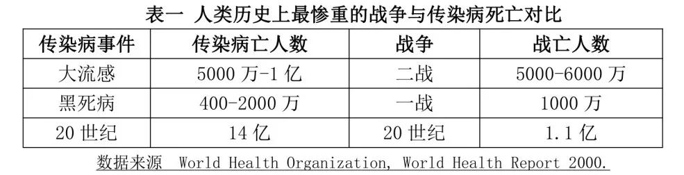

收录于合集

作者： 王文，中国人民大学重阳金融研究院执行院长。
来源： 《政治学研究》2021年第2期（节选）；中国人民大学重阳金融研究院
图片来源：www.ft.com
大国兴衰是一个“对所有地球上的居民都具有实际意义的问题”。经济学、国际关系学都有经典著作如经济学家曼瑟•奥尔森的《国家的兴衰》、戴维•兰德斯的《国富国穷》，国际政治学家保罗•肯尼迪的《大国的兴衰》、艾米•蔡的《大国兴亡录》，从政治、军事、经济与社会等宏大视角探究大国崛起与衰落的原因、进程与演变逻辑，但鲜有从传染病毒的微观视角出发的研究巨著。
2020年，新冠肺炎疫情席卷全球，对国家发展与世界形势造成始料未及的冲击，包括亨利•基辛格在内的许多著名国际政治学家都认为新冠疫情具有划时代的全球意义，更是引发大国霸权更替的猜想。这促使人们从理论层面思考传染病影响大国兴衰的历史规律与逻辑探究，重新审视长期被忽视的微小变量“病毒”的巨大冲击力。
作者梳理了百年来医学界、历史学界、国际关系学界对传染病研究的思想谱系，从大国博弈事例出发，挖掘传染病易发地域大国崛起的低概率性、大流行病直接导致大国衰亡的高概率性以及领导人感染后的大国变数等三条历史规律，将传染病对国家兴衰的作用分为快速毁灭型、长期干扰型、推动变革型等三个类别。
作者认为，发掘传染病对大国兴衰的历史传导规律，对更系统地认识与探索国家发展的动力具有重要意义，也有助于寻找中美关系“修昔底德陷阱”的化解之道，更对拓展国际关系的分析框架与研究变量、从人类命运共同体的角度重新建构大国博弈的未来叙事具有现实意义。
从生命存在形式看，人类其实寄居在一个病毒的星球。 病毒一直对文明进程与国家兴衰发挥着意想不到的作用。数千年的大国兴衰史，军事武器、经济金融、政治人物、社会组织的作用当然是巨大的，但许多时候它们的影响力远不及那些肉眼看不到的传染病毒。
哈佛大学医学院已故教授汉斯•辛瑟尔曾说，“刀剑、弓箭、机关枪甚至是烈性炸药，对一个民族的命运所造成的影响，都远远不及传播伤寒的虱子、传播鼠疫的跳蚤和传播黄热病的蚊子。”如表一所述，14世纪黑死病造成1/3当时欧洲人口的死亡、1918年西班牙大流感造成超过5000万-1亿人口的死亡，被视为“极端年代”（霍布斯鲍姆语）的20世纪，传染病致死的人数是战争死亡人数的14倍。 大流行病（Pandemic）对国家发展与民众生活的冲击力，常常超过一场战争、一次金融危机。

数千年来，人们习惯把传染病与自然的神秘力量联系起来，误认为病毒是恶魔、上苍、星象或某些恐怖的未知事物化身。 19世纪下半叶，病原生物学者们提出“病因-环境-宿主”模式，破除了早期“病毒未知说”，为传染病防治奠定了现代科学基础，深化了人类应对传染病的能力。
1935年，细菌学和免疫学教授汉斯•辛瑟尔《老鼠、虱子和历史：一部全新的人类命运史》一书，首次将病理学和历史学结合，以寄生病菌、虱子、斑疹伤寒为主角，尝试从传染病的侧面重新阐释人类的起源、发展以及未来畅想。该书出版后，广受好评。著名历史学家威廉•麦克尼尔评论该书“搜集一些表现疾病历史重要性的史料”、“极具可读性”，但“这类著作未能试图将疾病史纳入更宏大的人类历史的背景下考察……仍将疫病的偶然暴发视为对历史常态突然而不可预测的扭曲。”
威廉•麦克尼尔1976年出版其重要代表作《瘟疫与人》，首次系统地叙述传染病对人类历史演进的规律性影响。 ****该书对后来医学家、历史学家、政治学家、社会学家研究病毒与人类、国家的关系启发巨大，如《枪炮、病菌与钢铁：人类社会的命运》等聚焦传染病与人类命运研究的宏大著作，以及如《大流感：最致命瘟疫的史诗》《逼近的瘟疫》等聚焦在某个病毒种类或事件影响世界变迁的微观层面著述先后问世，极大提升了人类对传染病历史作用的认识。
然而，长期以来，只有医学与历史学界将传染病视为干扰人类发展的变量，以研究国家利益为核心内容的国际关系学者，似乎并没有在这场“敌对的、物种之间的民族主义无情战争”中找准防御对象。 “1990年以前，无论是哪一种类型的传染病防控，国际关系学领域都没有给予重视。”
虽然早在修昔底德《伯罗奔尼撒战争史》一书就有数页论述瘟疫逆转了雅典与斯巴达争霸固有轨迹， 但自1919年学科正式建立以来，国际关系学者长期以“乐观主义的情绪”， 认为“强大的医学武器，包括抗生素、抗疟药和疫苗，发动了一场战争，消灭了病毒、细菌和寄生虫敌人……并 预测在千禧年到来之前实现人类即便最贫穷国家都能实现健康转型的目标”， 进而 低估了传染病对国际形势与大国兴衰的影响力 。 另一方面，国际关系学界深受肯尼思•沃尔兹影响，需要在理论研究中选择并突出那些有规律、可预测、可界定、且可控的变量。若传染病在国家兴衰中的重要性过于强调，那么无疑会削弱国际关系理论对国家互动规律的解释力。
冷战结束以后，世界战争的威胁感下降，传染病的冲击力凸显。1990年全球4997万人死亡，其中传染病死亡人数达1669万（占34.4%），战争死亡32.2万（占0.64%）。 ****这样的鲜明反差引起了一些国际关系学者的注意，开始探讨传染病严重威胁国家主权、国际安全的理论逻辑。
1995年，美国内华达大学政治学教授丹尼斯•皮瑞杰就公共卫生、治理与人类福祉的关系进行探讨，从“微生物”中衍生了一个新概念“微安全”（microsecurity），推动安全定义的微观化，首次将传染病纳入到政治学的研究范畴。 1996年，美国《外交》杂志刊发《传染病的回归》一文，国际关系学一流期刊首次刊登传染病与国际安全关系的论文明确警示，传染病的时代已一去不复返的预估“高兴得太早了”。
美国科罗拉多学院国际政治学教授安德鲁•普里斯- 史密斯教授2002年《国家的健康：传染病、环境变化与对国家安全和发展的影响》一书，是首部剖析传染病与国际关系的理论专著。他谈道“这本书提出这样的观点：新出现与再现的传染病是对国家能力的压力源（stressor），产生对国家繁荣与安全的巨大破坏。国际关系理论存在的最初理由，是建立有助于避免因战争而造成过早丧失生命与生产力的模式。……但 传统的安全概念却忽略了人类痛苦和死亡的最大根源：围绕人类物种周边的微生物”。
在安德鲁•普里斯-史密斯教授2009年专著《传染病与混乱：全球化时代的疾病、生态与国家安全》， 史密斯提出传染病与国家安全的五大理论假设 ：一是传染病可能会成为一种压力源的变量，损害主权国家的繁荣、合法性凝聚力；二是传染病的大流行将加剧国家间经济与政治的不协调；三是只有一些被重点记录的传染病才会威胁国家安全，有些病毒则不会产生安全威胁；四是战争将产生“战争瘟疫”，助长了军队内部的传染病扩散，导致国内疾病负担的增加；五是“健康安全”范式以哲学式的方式融合了现实主义与自由主义的理论内涵。
21世纪初 ，艾滋病、SARS、埃博拉病毒等传染病不断冲击国家安全，从公共卫生、非传统安全角度研究世界形势的国际关系学者逐渐增多。 传染病的认知出现重大转折，不再只是被视为公共卫生问题，而是被认定为安全问题。大国兴衰的史实开始被重新解构。 ****
2017年美国俄克拉何马大学教授凯尔•哈珀在其被广泛赞誉的《罗马的命运：气候、疾病和帝国的终结》一书中，针对伟大的英国历史学家爱德华•吉本代表作《罗马帝国衰亡史》就“罗马衰落是其无节制的扩张”的理论纰漏，富有佐证力地把帝国兴衰与生物因素（细菌与病毒造成的灾难性瘟疫）、气候变迁连结起来，“从罗马人自己难以理解也无法想象的尺度上来看，帝国衰落是大自然战胜人类野心的胜利。……细菌和病毒起着重要的作用”。
国际关系研究思维范式在传染病领域的拓展，为公共卫生安全成为联合国千年发展目标2030年提供了理论依据。 2020年新冠肺炎疫情全球肆虐，进一步推动学术界对国家脆弱性的反思。强大的军事力量在传染病面前无计可施，各国应学会与大流行病共存等观点，已成为越来越多学者的共识。 有学者甚至提出，新冠疫情是否会对世界产生像黑死病对欧洲那样的持续且深远的影响？
可见，全球公共卫生安全的形势仍相当严峻。2020年新冠肺炎疫情全球蔓延只是传染病冲击人类社会的又一次严重表征。作为最早控制住疫情蔓延的大国，中国的学术界理应对后疫情时代的全球公共卫生治理、传染病频繁爆发的背景下如何加强国际合作、重构大国兴衰研究，提供更多理论创新与历史探索。 ** __**
不过，在中国，国际关系理论研究长期忽视影响国际关系的传染病变量。 2003年“非典”在中国爆发，中国学者才开始从非传统安全的角度思考国家发展，论述传染病威胁全球公共安全与全球化进程的状况。 **** 总体而言，中国学界对传染病的国际政治影响研究，主要是围绕着全球公共卫生治理、国家宏观政策等领域做了初步的现实概括与分析，多局限于应急性研究，缺乏历史规律的深度总结，也缺少长期性、系统性、战略性的研究成果。
由此可见，传染病是20世纪末以来逐渐兴起的国际关系研究变量。回顾近30年来全球国际关系学界对传染病的研究脉络，会发现三处较为明显的进展与不足：
第一，国际关系学者逐渐认识到传染病对国家安全的重要影响，但对传染病的全球冲击力与历史规律性研究不足， 既没有从大国兴衰历史进程的角度进行归纳总结，也没有充分认识到传染病可能颠覆或逆转国家发展轨迹、国际政治运转、文明发展进程的重大作用。
第二，国际关系学的研究对象已增加了传染病的内容，但研究主体是国家、研究重心是军事与经济安全、基本逻辑是国力竞争与国际博弈的国际关系思维范式并没有被改变。 传染病蔓延期的国际合作，往往是各国被迫而为之的战略权宜，而非思维惯性与现实定律。
第三，个人安全仍是传染病防治的主要目标，传染病冲击国家实力的预防性战略并未受到足够重视，国家尤其是全球大国尚未从共同体主义的逻辑去承担全球卫生安全的重大责任。 比如，特朗普执政以来，美国撤销白宫传染病应对办公室，关闭多个美国公共卫生领域的全球办事处，削减公共卫生预算，直接导致2020年新冠疫情爆发后美国抗疫全面失败与国际抗疫的合作不足。
可见， 传染病与大国兴衰的规律需要重新梳理，传染病对国家实力的影响因素需要重新评估，大流行病尤其是2020年以来新冠肺炎疫情造成的全球伤害，应该促使人们重新思考人、生态环境、全球治理与大国合作。 中国提出人类命运共同体的理念应该得到更多国际社会尤其是发达国家世界的重视。
文章观点不代表本平台观点，本平台评译分享的文章均出于专业学习之用, 不以任何盈利为目的，内容主要呈现对原文的介绍，原文内容请通过各高校购买的数据库自行下载。